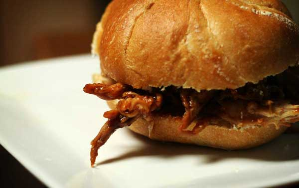

Pulled Pork Sandwiches

Photo by Ginny
This pulled pork recipe is made with Jack Daniels BBQ Sauce and goes great with a side of coleslaw and a cob of corn. (requires slow cooker)
Serves up to 12 people.

Ingredients
- 4lb. pork shoulder roast
- 12 buns of choice
Sauce
- 1/2 cup of Jack Daniels
- 1/2 cup chopped onion
- 4 cloves garlic, chopped finely
- 2 cups ketchup
- 1/3 cup vinegar
- 3 tbsp Worcestershire sauce
- 1/2 cup brown sugar
- 3/4 cup molasses
- 1/2 tsp pepper
- 1/2 tsp salt
- 1/4 cup tomato paste
- 1/2 tsp Tabasco sauce
Procedure
- Combine onion, garlic and Jack Daniels in a saucepan. Sauté until translucent.
- Add the ketchup, vinegar, Worcestershire sauce, brown sugar, molasses, salt, pepper, tomato paste and tabasco sauce. Bring to a boil then simmer uncovered until reduced and thickened. Add more Jack Daniels if a stronger flavor is desired.
- Now add the pork and the sauce made in the first two steps to the slow cooker (there may be extra sauce). Cook on low for 8 hours or until the pork is tender.
- Once cooked move the pork on to a plate or large bowl and shred. While doing this leave the sauce in the slow cooker and heat on high to reduce further.
- Return the pork (now shredded) to the slow cooker and mix until all the pork is thoroughly coated and reheated. Serve onto buns with a spoon.